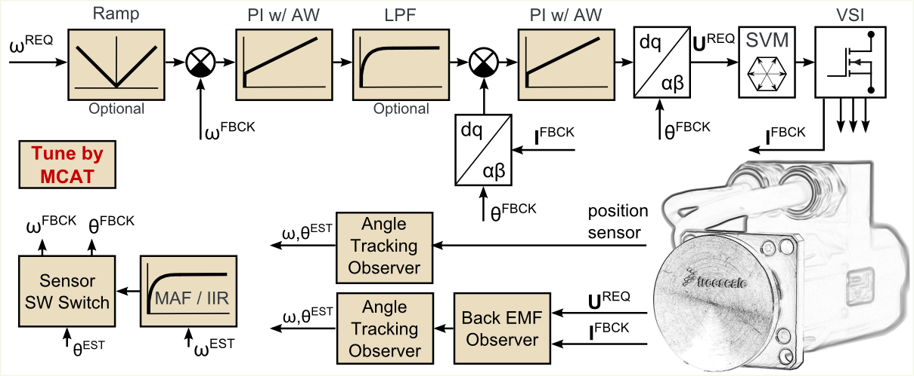

|  |
|
Motor Control Application Tuning tool
The MCAT is intended to be used as a tool for real-time tuning and debugging of PMSM industrial applications.
Parameters of the Field Oriented Control structure are estimated by MCAT based on the dynamic requirements and system parameters.
Right PI controller parameters lead to desirable behavior of the motor quantities. The static configuration of the tuned system can be
stored in an external header file.
Connecting and tuning a new electric drive setup becomes easier with a Control Structure tab which offers the possibility to split the control structure and allows controlling the motor at different levels of cascade control structure. |